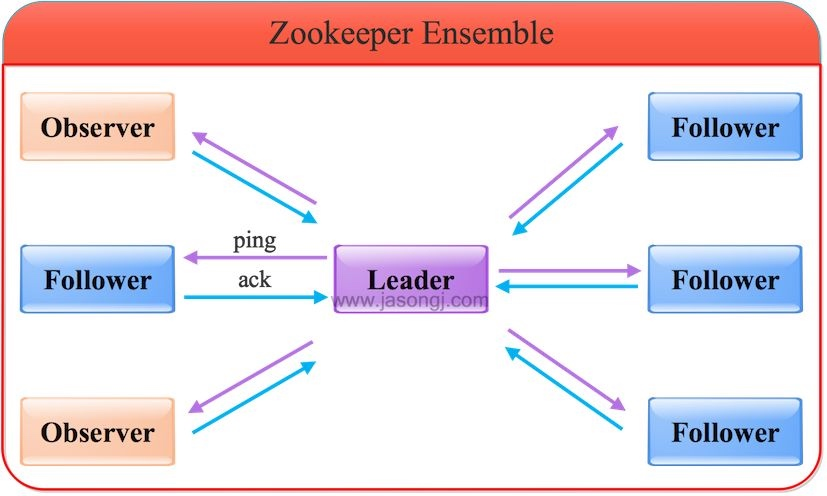

ZooKeeper的架构，并结合实例分析原子广播(ZAB)协议的原理，包括但不限于ZooKeeper的读写流程，FastLeaderElection算法的原理，ZAB如何保证Leader Failover过程中的数据一致性。
ZooKeeper是什么
ZooKeeper是一个分布式协调服务，可用于服务发现、分布式锁、分布式领导选举、配置管理等。
这一切的基础，都是ZooKeeper提供了一个类似于Linux文件系统的树形结构（可认为是轻量级的内存文件系统，但只适合存少量信息，完全不适合存储大量文件或者大文件），同时提供了对于每个节点的监控与通知机制。
既然是一个文件系统，就不得不提ZooKeeper是如何保证数据的一致性的。本节将将介绍ZooKeeper如何保证数据一致性，如何进行领导选举，以及数据监控/通知机制的语义保证。
ZooKeeper服务器角色
ZooKeeper集群是一个基于主从复制的高可用集群，每个服务器承担如下三种角色中的一种：
- Leader 一个ZooKeeper集群同一时间只会有一个实际工作的Leader，它会发起并维护与各Follwer及Observer间的心跳。所有的写操作必须要通过Leader完成再由Leader将写操作广播给其它服务器。
- Follower 一个ZooKeeper集群可能同时存在多个Follower，它会响应Leader的心跳。Follower可直接处理并返回客户端的读请求，同时会将写请求转发给Leader处理，并且负责在Leader处理写请求时对请求进行投票。
- Observer 角色与Follower类似，但是无投票权。

Zookeeper